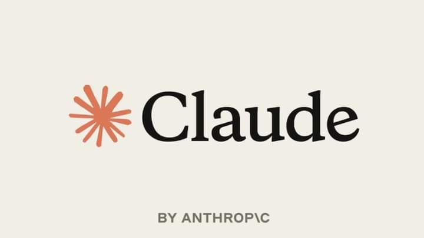

Google 發布 Gemini 4 Hydrogen，主打快速 Agent 工作流
Google 於 11 月 12 日推出 Gemini 4 Hydrogen，定位為日常編碼與 Agent 快速執行的效率型模型，不再追求智能上限。該模型提供 low、medium、high、xhigh 四檔思考深度，1M 上下文全程採單一價格，每百萬輸入 Token 1.5 美元、輸出 7.5 美元。在 Artificial Analysis 智能指數上，Hydrogen 預設檔取得 51 分，勝過同系列的 Argon，最高檔則達 54 分。新模型已全面上線 API、AI Studio、Gemini App、搜尋與 Antigravity，並同步登陸 Antigravity 的 Orchestrator 模型切換功能。這是 Google 六週內推出的第三款新模型，顯示其正以不同定位的模型分層覆蓋從日常任務到高階推理的需求。